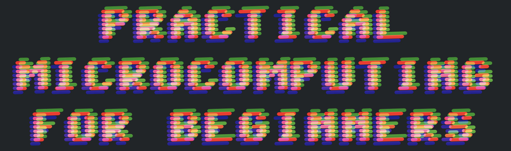
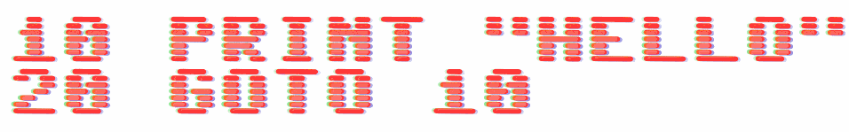

Sixtyfour Convergence is the COLRv1 companion of Sixtyfour a font inspired by the article Raster CRT Typography by Norbert Landsteiner, and is a rework of some old pixel versions of the Commodore 64.
Due to this project's specificity and the fonts' historical origin, they only support a limited set of glyphs.
To contribute, see github.com/jenskutilek/homecomputer-fonts.
These fonts are inspired by the interface fonts of two classic 1980s computers, the Commodore C64 (Sixtyfour) and Amiga (Workbench). When Jens Kutilek adapted them to the variable font technology, he did not just convert the pixel fonts, but tried to emulate the artifacts of rendering letters on a CRT screen.
The above fonts include two custom axes: Scanlines, which allows control of the height of the lines and, as a result of this, the amount of vertical space between the lines. And Bleed to change the amount of horizontal bleed of the pixels due to the phosphor latency found in CRT displays.
Sixtyfour Convergence is Simon Cozens's COLRv1 take on Sixtyfour, which introduces two additional new custom axes: Horizontal Element Alignment and Vertical Element Alignment. These axes allow the control of the position of three painted layers, reproducing the control of the offset positions of the red, green, and blue colors common on CRT monitors.
